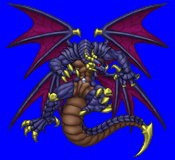
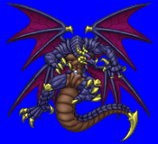
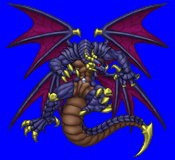
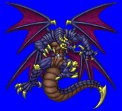

Height: ??? Weight: ???
Habitat: In the Underworld or the foggy night sky Origin: Arab Myth
Meaning: The Arabic word for "behemoth"
The Biblical notion of the behemoth was that of a large hippopotomus, but the Arabs revised this slightly and ended up with a large fish-like creature with wings. The myth goes that seven seas could fit within its girth. It is also said that its eye can shine a very bright light which normal humans cannot see. Legend says that Christ had the opportunity to see this light. Although Christ was said to be knocked unconscious by the light as he swam, he would have had to swim three days under that illumination to reach his destination.
See also: Behemoth